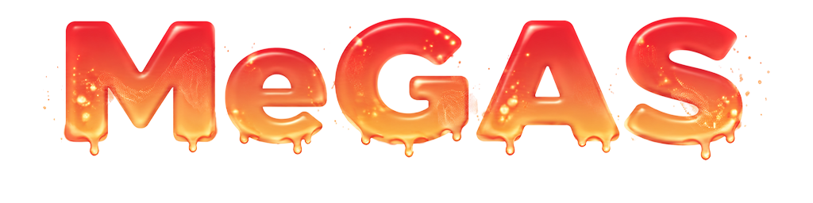
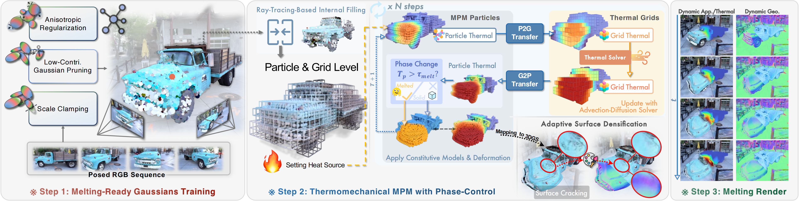

: Thermomechanical Dynamic Gaussian Splatting for Thermophysical Scene EditingRecent advances integrate physically grounded Newtonian dynamics with neural rendering frameworks, narrowing the gap between photorealistic scene reconstruction and physics-based animation. However, existing approaches focus on mechanically driven dynamics while neglecting temperature, a fundamental yet invisible physical factor underlying phenomena such as melting, solidification, and other thermomechanical processes. In this paper, we propose MeGAS, a novel framework that incorporates thermomechanical phase-change dynamics into 3D Gaussian Splatting (3DGS). Specifically, we propose a new thermomechanical dynamic Gaussian Splatting representation that augments 3DGS with temperature attributes and employs a heat advection-diffusion solver with MPM dynamics incorporating phase transitions, enabling physically plausible and visually realistic synthesis of thermophysical phenomena. Furthermore, a new topology-adaptive Gaussian rendering strategy is proposed to mitigate cracking and floaters under extreme deformation. Extensive experiments demonstrate that MeGAS produces physically consistent thermomechanical behavior while maintaining high-fidelity photorealistic rendering, advancing toward physics-integrated world models.
The video provides a detailed overview of the paper’s background, the design motivations behind each module of the pipeline, comparative experiments, and editing results across diverse scenarios.

Thermomechanical Dynamic Gaussian Splats. We augment 3D Gaussian Splatting with a per-Gaussian temperature field, update the temperature distribution using a grid-based heat advection–diffusion solver integrated into an MPM simulator, and perform temperature-dependent, phase-aware constitutive model switching. The resulting deformations are subsequently mapped back to the 3D Gaussian representation.
Topology-Adaptive Gaussian Rendering. Since melting entails extreme non-rigid deformation and topology change (e.g., surface cracking, internal exposure), naïvely applying PhysGaussian under such conditions leads to severe visual artifacts. We propose a topology-adaptive 3DGS framework specifically designed for stable rendering under large-scale melting deformation with Internal-Free Uniform Gaussian Regularization and Implicit-surface–guided adaptive surface cracking densification.
Our framework naturally supports bidirectional phase transitions: controlled heating induces melting, whereas subsequent cooling drives resolidification. This capability enables physically consistent thermomechanical evolution throughout the phase-transition cycle and facilitates general thermophysical scene editing.
For additional demonstrations, please refer to the final section of the video.
While baseline methods accumulate internal floaters, needle-like artifacts, and surface cracks under large deformations, our MeGAS maintains volume-consistent, crack-free geometry and stable rendering throughout the melting process.
Prior methods lack physical realism, photorealism, or multi-view consistency, whereas MeGAS preserves photorealistic appearance and delivers physically plausible, temporally consistent melting.
We illustrate the deformation process on real-world scenes, with rendered RGB images, rendered temperature field, and deformation geometries (rendered normals and meshes) at different viewpoints and time steps.
@inproceedings{yang2025megas,
title={MeGAS : Thermomechanical Dynamic Gaussian Splatting for Thermophysical Scene Editing},
author={Yang, Zesong and Lei, Yuanhang and Cui, Liyuan and Chen, Yihang and Huang, Jiaer and Zhao, Boming and Chen, Peter Yichen and Bao, Hujun and Cui, Zhaopeng},
booktitle={European Conference on Computer Vision (ECCV)},
year={2026}
}